{kind=link}
Position tells a story.
Left to right: when an output was created. Bottom to top: its amount, on a logarithmic scale. The HUD at the upper left tells you which block you are watching.
Bitcoin's output history, from the genesis block onward. Watch outputs appear, remain unspent, and move again. Pause at any block to look at the records behind a pixel.
8 trillion pixels: 3,840 × 2,160 per frame, across 966,361 block frames in the September 10, 2026 render. Each update adds more.
Bitcoin records value in discrete outputs, called UTXOs while they remain unspent. Each output has an amount and a creation block. Those two numbers give it a place in the picture.
Left to right: when an output was created. Bottom to top: its amount, on a logarithmic scale. The HUD at the upper left tells you which block you are watching.
Outputs with similar amounts and creation heights overlap. Colour shows weighted density. Empty locations are black; an output's contribution disappears when it is spent.
White marks signal creation or spending in the current block and then fade. Orange bars at the moving edge show recent creation activity by amount.
Ordinary outputs contribute 1; above 5 BTC, the contribution is amount ÷ 5 BTC. A single 100 BTC output therefore contributes 20. At 10 BTC and above, the palette ends in warm white.
Weighted density · logarithmically compressed colour scale
A straight timeline would squeeze recent activity into a sliver. Here, history folds into progressively smaller spaces while the newest 105,000-block epoch gets half the canvas.
An output remains in the picture until it is spent, even if it was created years earlier. Compressing older creation blocks keeps that history visible while reserving more detail for recent activity.
Each band covers 105,000 blocks, half a Bitcoin subsidy halving interval. The first two bands fit without compression. Gold markers in the demonstration locate the halvings, when the subsidy for mining a block is cut in half.
See the mapping and its tradeoffs →Read these as a sequence of accumulated creation and spending. The stripes and clusters show structure in output amounts. They do not, by themselves, identify owners or explain their intent.
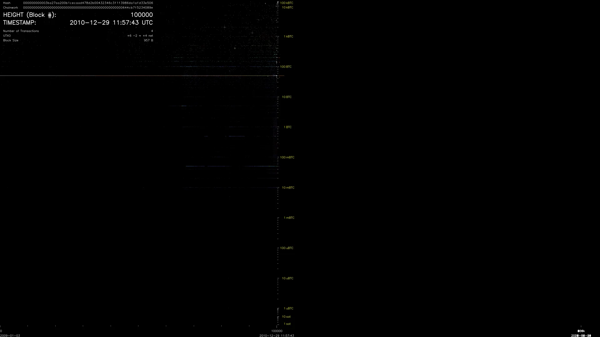
Early output history
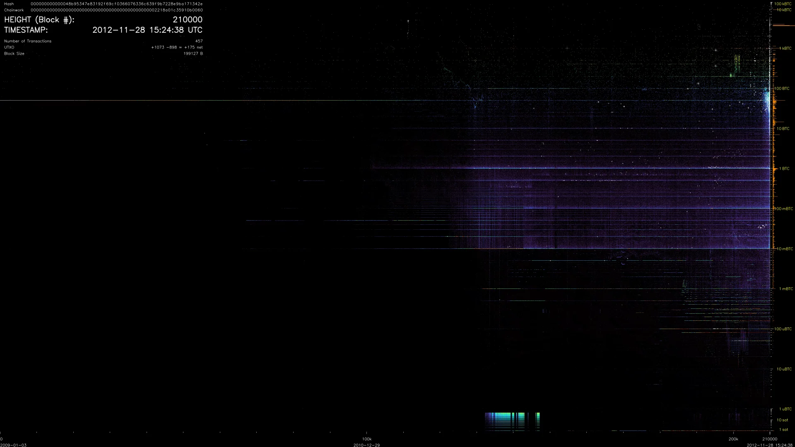
First subsidy halving
A denser field
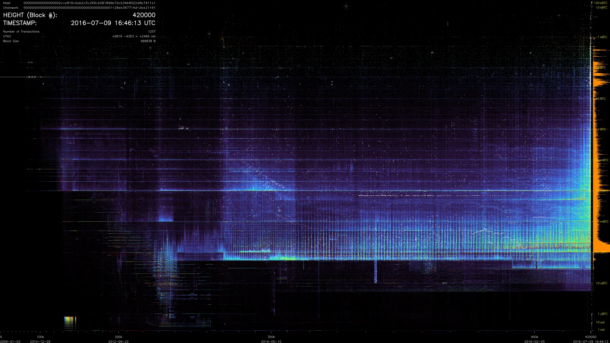
Second subsidy halving
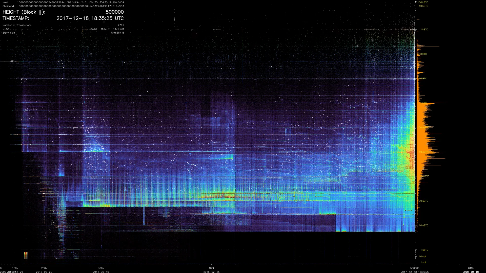
Half a million blocks
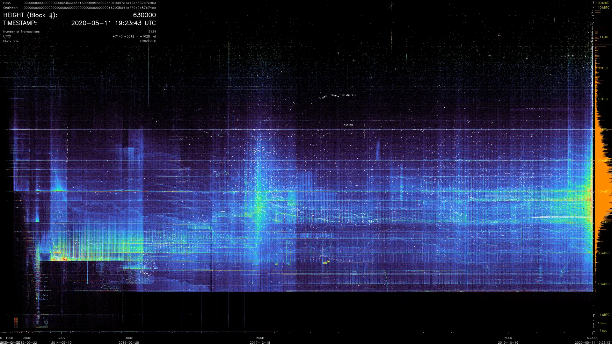
Third subsidy halving
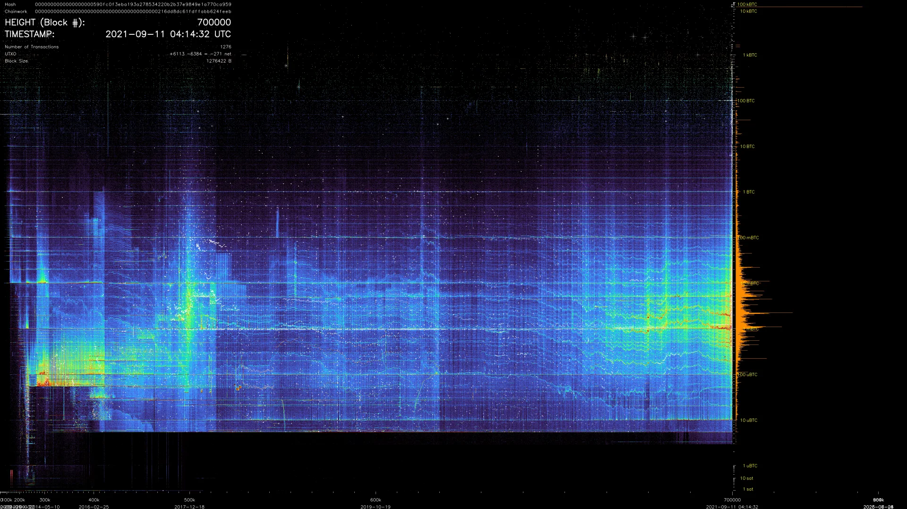
Seven hundred thousand
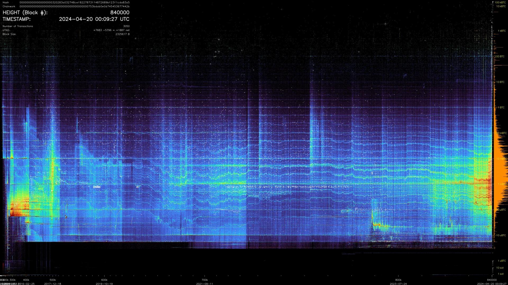
Fourth subsidy halving
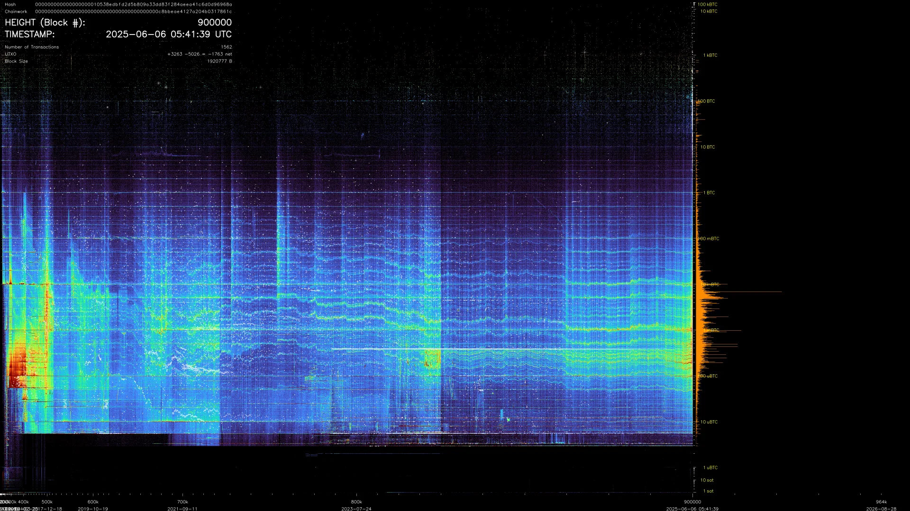
Recent output structure
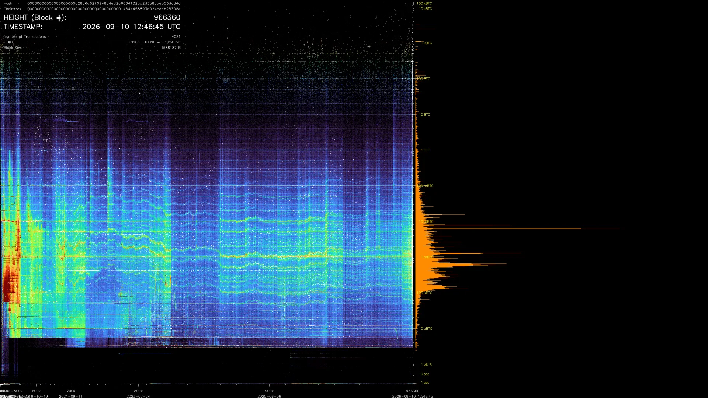
The published cutoff
Look closer. Repeated amounts form horizontal bands. High-value outputs occupy sparse upper rows. Spending old outputs lights up locations far behind the creation edge.
A spend flashes at the output's original location. Large, distant spends can form stars, sized by the total BTC moving at the pixel. Creation-edge flashes stay small to leave new output detail visible.
Fig. 03Blocks 202,880–203,059 · October 2012. This is a compressed preview; the explorer carries the 4K source.
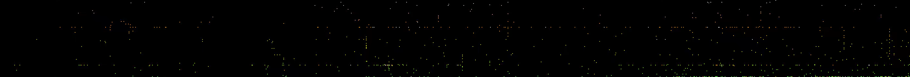
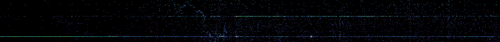
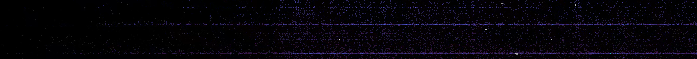
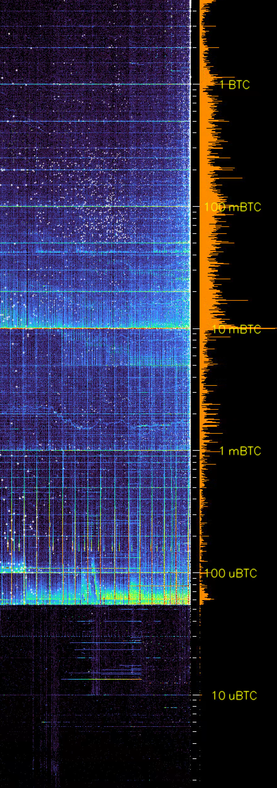
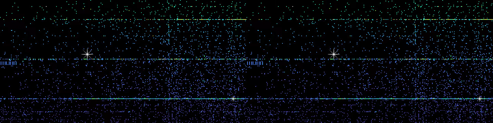
Pause the timeline and select a point. The explorer opens the output records behind that coordinate: amounts, creation dates, and spending history through the published cutoff.
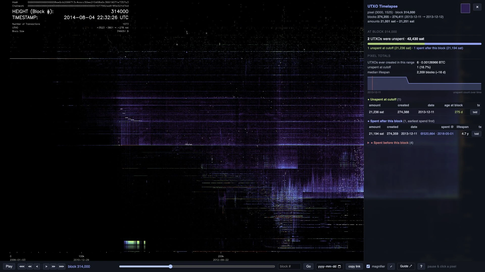
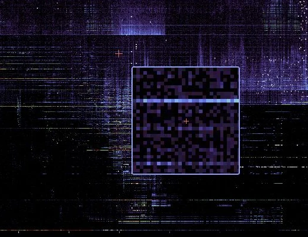
Use the magnifier to inspect individual pixels. Arrow keys move the selected point; hold Shift to move ten pixels.
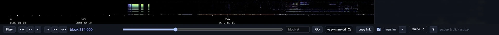
Jump to a block or date, step by 1 or 20 blocks, or change playback from 0.1× to 4×. The bracket keys move one block at a time.
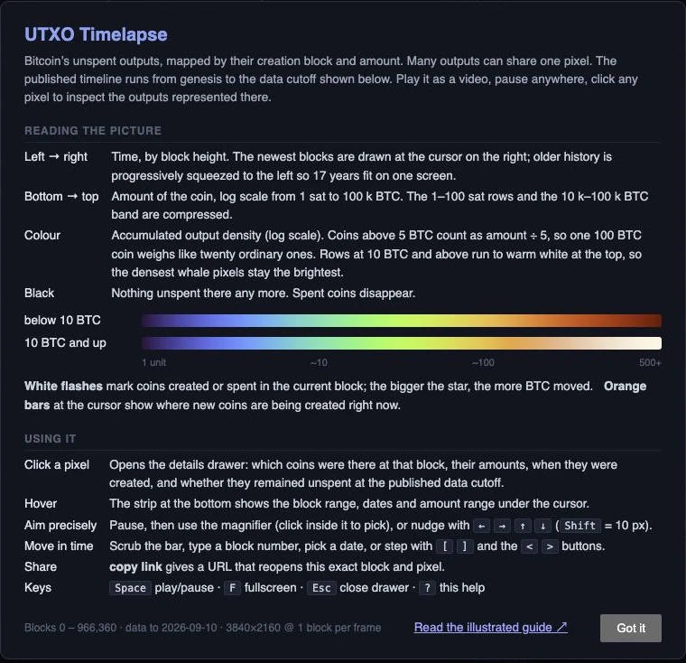
Read creation and spend dates and request transaction matches. “Share this view” pauses the film and opens its block/pixel link with copy and sharing options. Multiple transaction matches are shown when an amount is ambiguous.
{kind=link}
{kind=link}
{kind=link}
{kind=link}
{kind=link}
{kind=link}
{kind=link}
{kind=link}
{kind=link}
{kind=link}
{kind=link}
{kind=link}
{kind=link}
{kind=link}
{kind=link}
{kind=link}
{kind=link}
{kind=link}
{kind=link}